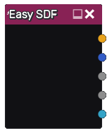

Easy SDF node
The Easy SDF node outputs a custom 2D or 3D SDF shape that can be defined using a simple editor.
Inputs
The Easy SDF node does not have any input.
Outputs
The Easy SDF node generates a Signed Distance Function output for a 2D or 3D shape, as well as Albedo, Metallic, Roughness and Emission maps.
Parameters
The Easy SDF node has no parameter by default.
Node parameters can be defined in the editor.
Editor
Double-clicking an Easy SDF node will show the SDF Builder window.

This window consists of (from left to right) a treeview of the SDF shape, a preview, and a parameter panel.
Treeview
The treeview shows all items of the SDF shape in a hierarchy. Items can be added, copied, pasted or deleted using the context menu.
The available SDF item types are:
For 2D:
Shapes: Arc, Arrow, Box, Cricle, Cross, Heart, Hexagram, IsoscelesTriangle, Line, Moon, N-gon, Pie, Polygon, Stairs, Star, Versica
Boolean operations:
Union joins its children into a single shape
Intersection intersects its children
Difference removes all subsequent children from the first
Smooth union and smooth intersection are smooth variations of union and intersection
Alter operations that are applied to their children:
Flip, mirror or elongate along X and/or Y axis
Round by dilating Shapes
Bend
Annular
Morph between 2 children shapes
For 3D:
Shapes: Sphere, Box, Cylinder, Capsule, Pyramid, Ellipsoid, Octahedron
Revolution and Extrusion (that accept 2D SDF as children)
Boolean operations:
Union joins its children into a single shape
Intersection intersects its children
Difference removes all subsequent children from the first
Smooth union and smooth intersection are smooth variations of union and intersection
Alter operations that are applied to their children:
Flip, mirror or elongate along X and/or Y axis
Round by dilating Shapes
Bend
Annular
Morph between 2 children shapes
All item types have builtin translate, rotate and scale operations. Unless specified otherwise, all items apply a union operation to their children.
For both 2D and 3D items, Coloring items can be added, and define the corresponding channel for their parent:
Albedo
Metallic
Roughness
Emission
Coloring items generally apply to their parent item, except for smooth unions that only take their children colors into account (and blend them according to their ColorK parameter).
Those Coloring items can contain Texturing items:
Uniform: a uniform color
SimpleGradient: Create a gradient between 2 colors (defined as parameters) following its grayscale child texture
Pattern: A grayscale pattern similar to the Pattern node
FBM: A grayscale noise similar to the FBM node
Preview
The 2D preview shows the generated shape for the whole tree in grey, and highlights the selected subtree in light grey and the selected item without alterations in light yellow. It has several view modes:
a mode that shows the SDF and Albedo coloring
a mode that shows the SDF only
a mode that shows the Albedo coloring
a mode that shows the Metallic coloring
a mode that shows the Roughness coloring
a mode that shows the Emission coloring
The 3D preview shows the generated shape for the whole tree.
Controls for position, scale, rotation angle and item-specific parameters are shown in the preview and can be used to modify the selected item’s parameters.
Parameters
The Parameters panel has 2 sections, Node Parameters, and Item Parameters.
The Node Parameters must be declared and can be used in Item Parameters expressions. A new node parameter can be created by clicking the “+” button. Its name can be modified directly in the corresponding text entry, its label and description can be edited by using the “yellow page” button, and its bounds and editing step can be set using the pencil button. It can also be deleted using the red cross button or moved in the list with the arrow buttons.
The Item Parameters section shows the parameters of the currently selected item. They are predefined for each item type, and float parameters have an extra “expression” button, that can be used to define an expression that uses Node Parameters.
Regarding parameters, there are 2 modes in the editor, and clicking either Node Parameters or Item Parameters checkbox will switch:
In Item Parameters mode (enabled by default), Node Parameters are not taken into account, and the values of Item Parameters can be edited. Parameter expressions and Node Parameters can be edited, but doing so will not update the preview. This mode can be used to edit a default pose for the shapes.
In Node Parameters mode, Item Parameters will be read-only (and the corresponding) gizmos in the preview will be hidden, parameter expressions will be applied when defined. This mode is useful to tweak expressions and default values for the Node Parameters.
Example images